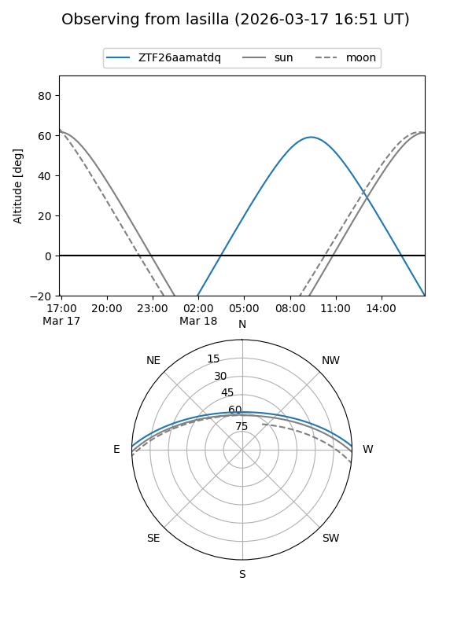
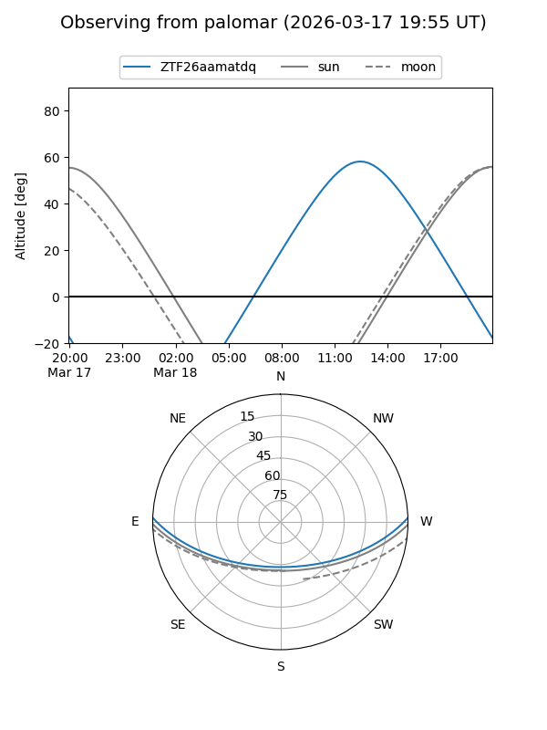

ZTF26aamatdq
Target ZTF26aamatdq at 2026-03-18 14:08
Aliases and brokers:
FINK: link
Lasair: link
ALeRCE: link
alt names
ZTF26aamatdq (ztf,fink_ztf)
Coordinates:
equatorial (ra, dec) = 245.7804,+1.60963
equatorial (HMS+DMS) = 16:23:07.29,+01:36:34.68
galactic (l, b) = (15.5388,+33.31116)
Flags:
Photometry:
last ztfg=17.23, ztfr=16.42
1 ztfg, 1 ztfr detections
Lightcurve
Visibility


Additional plots